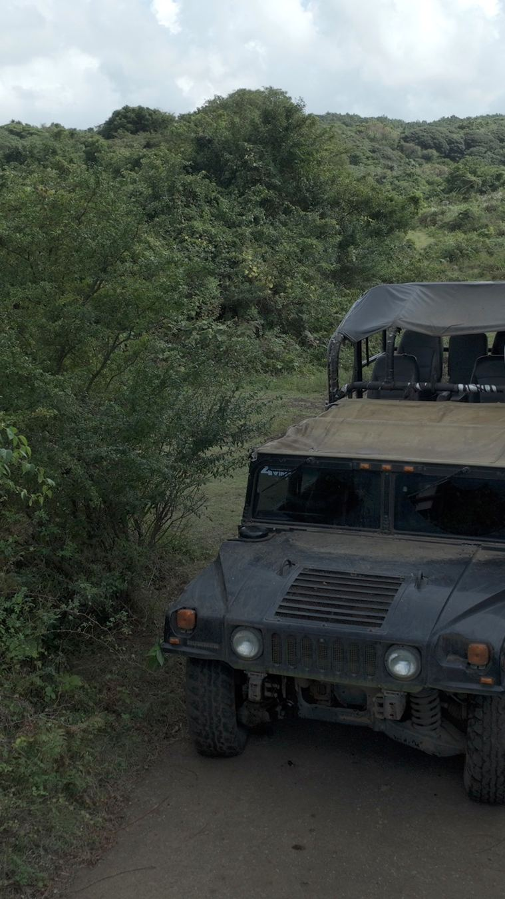

방송 클립 자리
tvN ‘바퀴 달린 집’
제주 원시림 편에 제라진 오프로드 체험이 방영되었습니다.

제주 유일의 13만 평 오프로드
포장된 길은 없습니다. 말이 다져놓은 길, 곶자왈, 그리고 선새미못.
베테랑 드라이버가 모는 의 야생 주행.
정시 출발 · 최소 이상 · 잔여 좌석은 전화로 최종 확정됩니다.
TOUR & COURSE
포크레인으로 숲을 베어 만든 길이 아닙니다. 방목된 말들이 수십 년간 다니며 자연히 다져진 길을 따라 개의 익스트림 구간을 설계했습니다.
※ 개념도입니다. 실제 코스 GPS 트랙은 360 영상 SRT 데이터로 제작 예정입니다.
탑승 전 안전 교육과 사전 동의서 확인. 화장실은 여기서 마지막입니다.
시야가 트인 초원 구간. 속도감이 붙는 첫 번째 도파민.
원시림 사이 좁은 길. 나뭇가지가 차창을 스칩니다.
차를 세우고 드라이버가 직접 찍어주는 화보 타임.
운이 좋으면 방목 한라마 무리와 노루를 만납니다.
비 오는 날이 오히려 하이라이트. 우비를 준비하세요.
VEHICLES
| 구분 | 탑승 | 요금 | 체중 제한 | 추천 |
|---|---|---|---|---|
| 오프로드 SUV 혼승 | / 1인 | 처음 · 가성비 | ||
| 험머 H1 (험비) VIP | 최소 5~6인 / 최대 12인 | / 1인 | 단체 · 임팩트 | |
| 험머 H3 단독 | 최대 4인 | / 1대 | 가족 · 커플 | |
| 지프 루비콘 단독 | 최대 4인 | / 1대 | 정통 오프로드 | |
| 코만도 단독 | 최대 7인 | / 1대 | 일행 단독 · 퍼포먼스 |
PHOTO SERVICE
리뷰에서 스릴만큼 자주 언급되는 것이 사진입니다. 코스 중간 포토스팟에서 차를 세우고, 기사님이 역동적인 각도로 화보급 사진과 영상을 찍어 드립니다.


※ 시안용 임시 이미지(드론 원본 프레임). 실제 운영 시 고객 사진은 초상권 동의분만 사용합니다.
MEDIA & PRESS
제주 원시림 편에 제라진 오프로드 체험이 방영되었습니다.
제주 이색 체험·스릴 액티비티 코스로 소개되었습니다.
8K 360 영상으로 탑승 전 코스를 둘러봅니다. GPS 연동으로 코스맵과 연결됩니다.
험비 다큐, 주행 영상, 30분 오프로드 ASMR.

SUSTAINABILITY
코스를 만들기 위해 곶자왈의 나무를 베지 않았습니다. 방목된 말들이 다니며 자연히 다져진 길을 그대로 따라 코스를 설계했습니다. 세계자연유산에 인접한 원시 곶자왈 생태계와 , 그리고 이곳에 사는 한라마와 노루가 제라진의 진짜 자산입니다.
CREW & SAFETY
베테랑 오프로드 레이싱 드라이버. 코스와 개 이벤트 구간을 직접 설계했습니다.
예약 시 전자 사전동의서(e-Waiver)에 체크하면 현장 대기 시간이 줄어듭니다.
RESERVATION
정시 출발 스케줄에서 선택
가성비 혼승 / 일행만 타는 프라이빗
프라이빗은 차종까지 선택
신장·체중·연령·건강·취소 규정 확인
결제는 기존 예약 시스템(아임웹 · 네이버예약)으로 연결됩니다 — 하이브리드 B안 기준 시안입니다.
천재지변·기상 악화·차량 사정·최소 인원 미달로 투어가 취소되면 위약금 없이 전액 환불됩니다.
마감 후 취소 및 당일 불참은 환불이 불가합니다. 성수기·주말은 별도 규정이 적용됩니다.
웹 결제만으로 확정되지 않습니다. 전화로 실시간 잔여 좌석을 확인해 주세요.
점선 = 업체 확정 전 플레이스홀더
값은 assets/js/fact.js 한 곳에서 관리